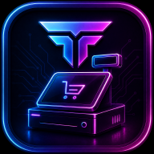
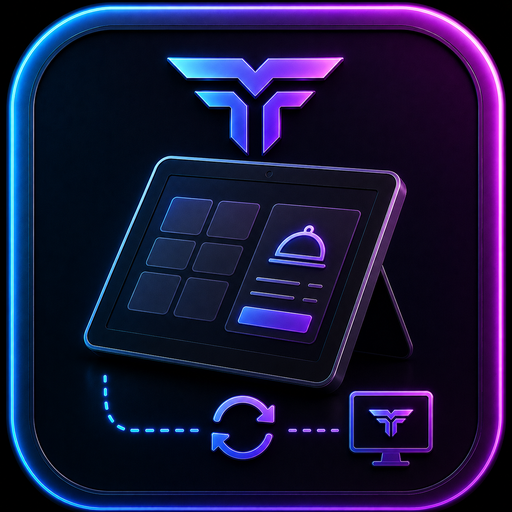
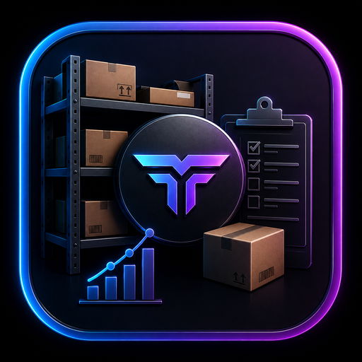
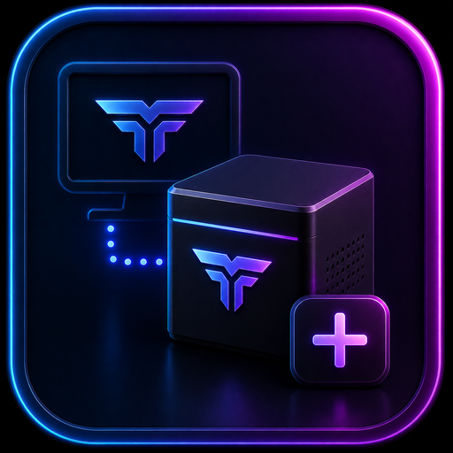
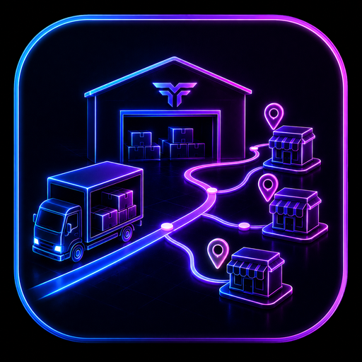

Operación local
La venta principal, inventario, caja y reportes no dependen de que los servidores de Tenkai estén disponibles.
Ecosistema de comercio
Solución integral para tiendas, abarrotes, farmacias y comercios. Opera offline-first con venta rápida, inventario por kilo o gramo, costo ponderado, módulos móviles y crecimiento por licencias.
Instalador para Windows · 35.1 MB. MultiCaja se activa dentro del mismo programa cuando se adquiere el módulo.
Filosofía
La licencia adquirida no vence. La caja, el catálogo y los datos principales permanecen en el negocio; actualizaciones, Tenkai Care y servicios futuros se ofrecen por separado.
La venta principal, inventario, caja y reportes no dependen de que los servidores de Tenkai estén disponibles.
La edición adquirida conserva sus condiciones. Tenkai Care es opcional y no transforma el POS en una renta.
Inventory, MultiCaja, Resguard, Routes y Distribution se agregan cuando resuelven una necesidad real.
Respaldos, catálogos y conexiones LAN se administran desde los equipos autorizados del negocio.
Windows y Android
El logotipo principal es el de Windows. Android conserva su identidad propia para la experiencia táctil y el escaneo móvil.
Windows · Aplicación principal
Venta con teclado y atajos F1–F12, lector USB, impresión, productos, inventario, proveedores, caja, reportes y configuración.

Android · Interfaz móvil
Búsqueda, tickets, cobro y lectura de códigos desde un dispositivo portátil. La disponibilidad se consulta directamente con Tenkai.
Herramientas de poder
Tenkai POS reúne venta, inventario, precios, clientes y análisis en un flujo diseñado para no detener la fila.
Localiza por nombre, UPC actual o anterior, código interno, proveedor o QR. Acepta lector, cámara y cantidad*código.
Atajos F1–F12, una pantalla de venta y tickets abiertos simultáneos para cambiar de cliente sin perder el pedido.
Vende por peso, pieza o dinero recibido; el sistema convierte y descuenta la existencia equivalente.
Reglas como 3 por $20, precio de mayoreo por cantidad mínima, promociones manuales y precio especial por cliente.
Combina existencia y costo actuales con la nueva entrada para obtener un costo medio trazable.
El entorno Professional contempla lotes, fechas de caducidad y salida ordenada para negocios que necesitan control sanitario.
Actualizaciones de precio por porcentaje de costo o por margen objetivo, sin confundir ambas fórmulas.
Prepara encargos y comprobantes antes de convertirlos en una venta que afecte caja e inventario.
Conteo editable de billetes y monedas, subtotales automáticos y manejo de dólares como moneda secundaria.
Lee catálogos XLSX de Eleventa para facilitar una migración inicial. Tenkai Tenshi no tiene propiedad, asociación, afiliación ni participación con Eleventa; la función no implica autorización de esa marca.
Compara similitud de nombres para advertir cuando un producto con código nuevo podría ser el mismo artículo.
Organiza productos, alias de código, variantes, presentaciones y reglas comerciales desde un catálogo central.
Granel sin cálculo mental
Las reglas de presentación convierten una venta rápida en un descuento de inventario verificable.
Bolsas de $10 o $20, carteras de huevo u otras presentaciones descuentan automáticamente la cantidad equivalente.
Accesos para cantidades frecuentes —por ejemplo medio kilo— reducen capturas durante la venta.
La tecla * permite capturar cantidad o importe y calcula el valor complementario para vender sobrantes o cantidades libres.
El catálogo conserva kilos o unidades reales en lugar de convertir cada bolsita en un producto independiente.
Tenkai Inventory
El teléfono lleva el catálogo autorizado a la puerta, bodega o pasillo y devuelve cambios como lotes auditables.
Descarga productos al dispositivo, busca o escanea aunque la señal no alcance toda la bodega.
Captura cantidades y costos al recibir mercancía; las actualizaciones de precio dependen de los permisos concedidos.
Entrega diferencias o recepciones en lotes identificados; el dispositivo solo los elimina después de la confirmación del POS.
Supervisa artículos sensibles, conserva movimientos y genera reportes/PDF desde el dispositivo.
Decisiones con datos
Separa ingreso, costo de mercancía, utilidad estimada e impuestos para revisar el resultado del periodo.
Compara ventanas de 2, 4 u 8 semanas para reconocer días fuertes y preparar compras.
Identifica artículos sin ventas en 15, 30 o 60 días para decidir promoción o liquidación sin borrar historia.
Entradas, ventas, devoluciones, mermas y ajustes dejan un historial por producto.
Perfiles de operación
Para operaciones que priorizan velocidad y no desean capturar existencias detalladas.
Caja, catálogo, stock, proveedores, precios, clientes, cortes y reportes cotidianos.
Lotes, caducidades, membresías, apartados, pedidos, producción diaria, costo ponderado y reportes avanzados.
Ecosistema
POS conserva la autoridad comercial; los demás módulos resuelven terminales, piso, contingencia, almacenes o proveedores.
Punto de venta maestro local para cobrar, administrar y auditar.

Una caja Android adicional dentro de la misma red y con las reglas del POS.
Ver más
Conteos, productos vigilados y recepción de proveedor desde el piso.
Ver más
Venta offline de contingencia y conciliación cuando regresa el sistema principal.
Ver más
Almacén, sucursales, envíos, acuses y operación móvil.
Ver másProveedor, rutas y catálogos firmados para evitar recaptura.
Ver másPrecios Founders · Programa de lanzamiento
Como estamos entrando de manera agresiva al mercado, estos son precios especiales para nuestros primeros Tenkai Founders. Son promociones de lanzamiento: la promoción puede terminar para nuevas compras, pero la licencia adquirida conserva sus condiciones y alcance.
La edición comprada mantiene el alcance y las condiciones adquiridas.
MultiCaja y Resguard se compran por separado; MultiCaja incluye una caja adicional y cada caja posterior tiene su propia licencia.
Tenkai Care no convierte la licencia permanente en una renta.
Beneficios, reglas y disponibilidad se explican en la página de los primeros fundadores.
Conocer Tenkai FoundersEdiciones y módulos de fundador
Starter, Professional, Distribution y Business muestran lo que recibe cada comercio. Los módulos y servicios mantienen precio y alcance independientes.
Fundador
Fundador
Fundador
Edición total
$799 $499
MultiCaja incluye exactamente una caja adicional. Cada caja posterior: $299 $199 MXN en promoción.
$799 $499
Caja de contingencia offline y conciliación controlada.
$299/año
Servicio opcional de mejoras, soporte y gestiones; no convierte la licencia en renta.
Precios promocionales en MXN sujetos a disponibilidad. Una licencia adquirida conserva sus condiciones; módulos y servicios tienen alcance independiente.
Pruebas de Tenkai POS
Estas mediciones pertenecen a Tenkai POS y forman parte de su página. La comparativa principal usa las copias optimizadas en la versión 41, después de corregir la generación de reportes y el cálculo de utilidad.
La tabla Eleventa corresponde a la comparación histórica v0.2.2+49 y está ordenada de mayor a menor tiempo. No debe mezclarse con la medición optimizada V41 que aparece debajo.
Prueba real reportada: catálogo de Eleventa con 3,447 productos importado en 2.41 s. Esta medición corresponde a una ejecución real comunicada por el creador; debe distinguirse de los escenarios sintéticos V41/V43.
Tenkai POS únicamente admite la importación de un catálogo compatible. Tenkai Tenshi no es propietario, desarrollador, socio, afiliado ni representante de Eleventa, y esta función no implica relación comercial ni autorización de esa marca.
Una sola comparativa · versión optimizada V41
Se ejecutó el mismo escenario con 40,000 productos, 100 ventas diarias y datos sintéticos de 5 y 10 años. Esta sección reúne volumen y tiempos corregidos en una sola lectura: la cifra menor a un segundo corresponde al resumen de utilidad SQL; el escenario completo incluye todas las consultas y tarda 2.633 s / 3.556 s.
La generación masiva de filas sintéticas es una preparación de laboratorio y no representa el tiempo de cobro. En la versión V41, el resumen de utilidad bajó a 0.265 s en 5 años y 0.520 s en 10 años; productos más vendidos quedó en 0.498 s y 1.088 s.
Catálogo, búsqueda, escaneo y Kardex individual siguen siendo utilizables. La memoria máxima pasó de 206.68 a 207.54 MiB en la medición V41.
Los reportes que recorren ventas históricas aumentan con el periodo. Por eso se publican sus tiempos exactos y no una promesa de respuesta instantánea.
Auditoría posterior V43
3.541 s de pared en la auditoría V43.
546.481 ms en la base de 10 años; el mismo orden de magnitud sub-segundo.
1,070.170 ms; se mantiene cerca de un segundo.
133.152 ms para 200 códigos, 92.9 ms en búsqueda y 14.987 ms para el Kardex de un producto.
Lectura correcta
Insertar cientos de miles de ventas y movimientos para fabricar la base de prueba es una preparación de laboratorio.
La versión V41 calcula utilidad directamente en SQLite: 0.265 s a 5 años y 0.520 s a 10 años.
Escaneo, búsqueda y Kardex no son el mismo proceso que un reporte global; por eso se miden por separado.
Equipo, almacenamiento, versión, antivirus y forma del catálogo pueden modificar los resultados.
Futuro opcional
La hoja de ruta contempla alertas remotas de despacho o recepción, no trasladar por obligación las ventas del negocio a una nube.
Avisos futuros relacionados con envíos preparados desde Tenkai Routes.
Notificaciones futuras sobre faltantes o diferencias al recibir lotes.
Las ventas y la base comercial permanecen locales; cualquier servicio remoto deberá actualizar la política antes de operar.
Preguntas frecuentes
No para la operación principal. Internet puede usarse de forma opcional para verificaciones, descargas o servicios futuros.
La edición adquirida es permanente bajo sus condiciones. Tenkai Care es opcional.
Sí: kilo, gramo, pieza, volumen, importe libre y presentaciones configurables.
Por $299 MXN al año ofrece mejoras, soporte, recuperación y migraciones según sus condiciones vigentes.
Instalador para Windows
Descarga el instalador o solicita orientación para elegir edición y módulos.